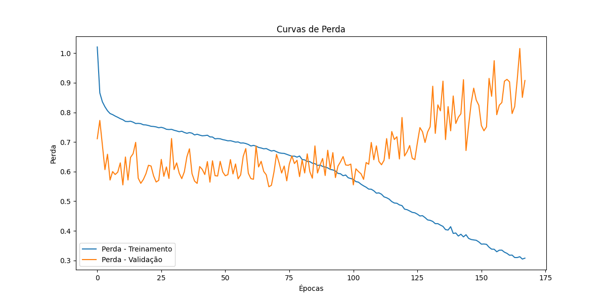
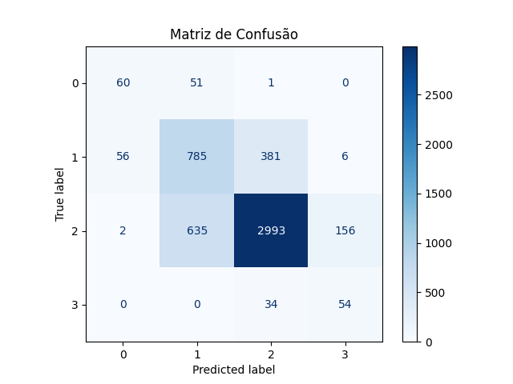
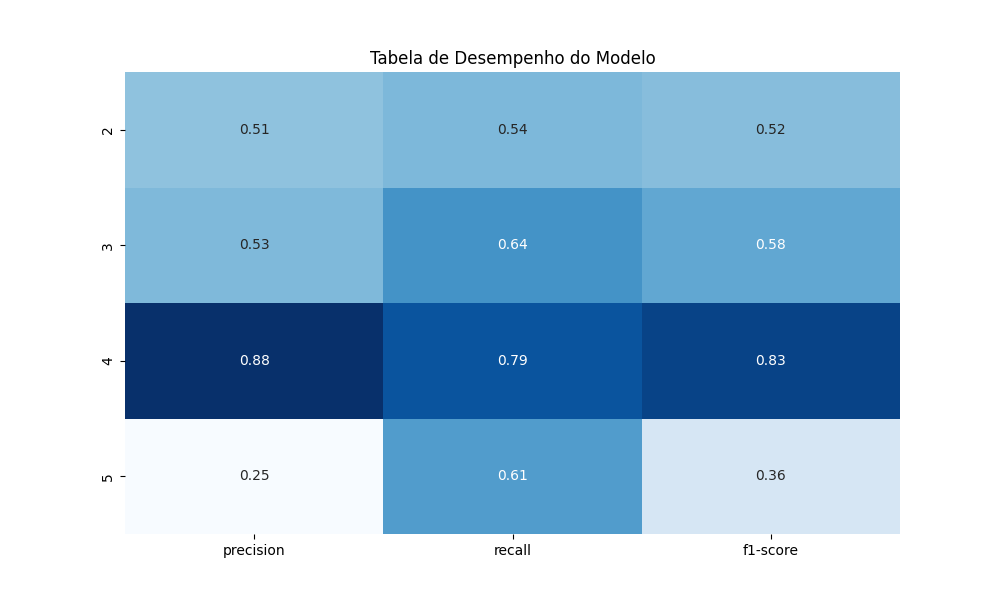

Relatório do Projeto LSTM para Renewable Percentage
Resumo do Modelo
Loss no conjunto de teste: 0.6058
Acurácia no conjunto de teste: 0.7465
Curvas de Desempenho

Matriz de Confusão

Tabela de Desempenho do Modelo
